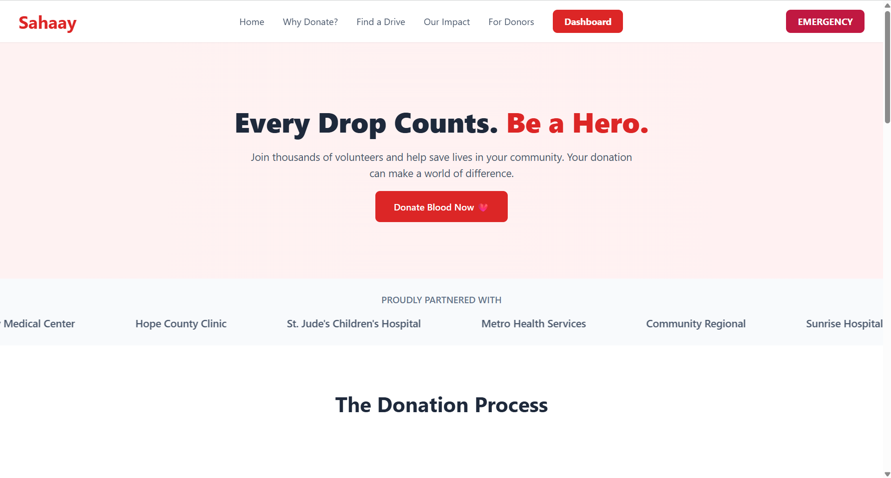

Project Overview

Sahaay is an AI-powered blood donation platform designed to simplify and accelerate access to blood during medical emergencies. The platform intelligently connects patients, hospitals, blood banks, and eligible donors using smart matching and location-based sorting, significantly reducing delays in critical situations.
Problem & Solution
The Problem
During medical emergencies, finding compatible blood donors or nearby blood banks is often slow, manual, and unreliable. The lack of real-time coordination leads to critical delays, miscommunication, and sometimes loss of life.
The Solution
Sahaay addresses this issue by leveraging AI-driven donor matching, real-time availability tracking, and smart sorting based on blood group compatibility, location proximity, and donor eligibility. This ensures faster, more reliable connections between donors and recipients.
My Role & Contributions
I worked on Sahaay as a Full Stack Developer, contributing across system design, frontend development, backend logic, and AI integration.
- Frontend Development
- Designed a clean, intuitive, and responsive UI focused on emergency usability.
- Implemented location-aware and role-based user flows for donors, recipients, and hospitals.
- Backend & AI Logic
- Developed intelligent donor–recipient matching algorithms.
- Implemented smart sorting based on blood type compatibility, distance, and availability.
- Ensured secure handling of sensitive health-related data.
- System Optimization
- Focused on minimizing response time during emergency requests.
- Designed scalable workflows for high-demand situations.
Technologies Used
- HTML5
- CSS3
- JavaScript (ES6+)
- React.js
- AI-Based Matching Logic
- Location-Based Services
- Firebase / Backend Database
- Git & GitHub
Challenges & Learnings
- Emergency-Centric UX: Designing interfaces that work effectively under stress taught me the importance of clarity and minimalism.
- AI Matching Accuracy: Ensuring donor eligibility and compatibility required careful rule-based and intelligent filtering logic.
- Ethical Data Handling: Managing sensitive health information reinforced best practices in data security and privacy.
Future Enhancements
- Integration with government and hospital blood bank APIs.
- AI-based donor availability prediction.
- Emergency notification system with SMS and push alerts.
- Analytics dashboard for hospitals and NGOs.